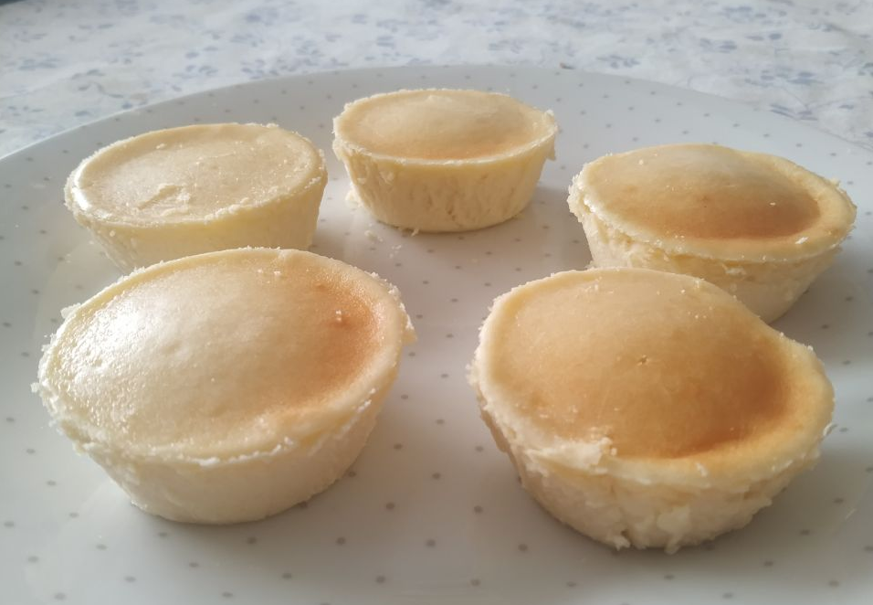

Cheesecake

Ingredientes
- Queso Cremoso (Philadelphia, o cualquier otra marca pero quizá no queda tan bueno)
La cantidad de cada ingrediente depende de cuanto queramos hacer, el queso cremoso lo podemos encontrar en barras de 270-300g así que los ingredientes a partir de aquí serán por cada barra que usemos.
Para referencia, por cada barra que uso me salen más o menos 6 pastelitos tamaño cupcake, y para hacer un pastel para cortar a trozos usaría 3 o 4 barras.
- Nata para cocinar 20ml*
- Azúcar 50g*
- Maizena 35g*
- Huevos 1*
- Esencia de vainilla
*Multiplicar estas cantidades por el número de barras de queso cremoso que vayamos a usar.
IMPORTANTE: Tened en cuenta todo lo que podais necesitar para la fase de Pre-Horneado como por ejemplo aceite, papel vegetal o ingredientes para una base de galleta.
Preparar la Masa
Sencillo, vamos a ir incorporando los ingredientes 1 a 1 hasta que tengamos la masa lista para hornear. Por favor aseguraos de hacerlo en un bol suficientemente grande para que os quepa todo y podais mezclar sin problemas.
Empezamos metiendo en el bol todo el queso (mejor si está a temperatura ambiente porque estará más blando y será más fácil de mezclar) y el azúcar y mezclamos hasta que el azúcar quede bien incorporado.
De la misma manera incorporamos ahora los huevos.
Ahora la nata.
Ahora toca la esencia de vainilla, yo normalmente uso 1 cucharadita de postre y media por cada barra de queso, pero esto va un poco al gusto y al tamaño de vuestras cucharillas.
Y por último incorporamos la maizena hasta que quede la masa bien uniforme.
Ahora ya deberíamos tener la Masa lista para hornear
Pre-Horneado
Vale, esta parte la escribo porque no quiero que luego haya quien se le quede el pastel pegado al molde y digan que no avisé.
Prepara el molde en que vas a hornear la masa, ya sea con aceite, mantequilla o papel vegetal para que no se te pegue el pastel al borde y luego tengas que hacer una ingeniería para no cargártelo. Yo uso un spray anti-adherente de pastelería que tengo por casa.
Para la base puedes hacer una base de galleta, yo no me he molestado nunca porque de momento solo he hecho tamaño cupcake y no valía la pena. Así que no os puedo escribir receta en cuanto a ello pero podeis buscar en youtube "base de galleta para tarta" y seguro que encontráis muy buenos ejemplos, planificad esto a priori pofavoh.
Horneado
Si habeis preparado correctamente el bol, esta parte será también sencilla.
Metemos la masa en el bol y dejamos que vaya saliendo el aire que tenga.
Necesitaremos una bandeja para el horno, con algo de profundidad (ahora vereis el porqué).
Si el bol donde hemos metido la masa no es hermético por la parte de la base, entonces tendremos que cubrir la base con papel de aluminio y que suba por los lados (paciencia, ahora veréis el porqué).
Metemos el bol en la bandeja y llenamos la bandeja con agua hirviendo tal que así:
¿Veis ahora el porqué de todo lo anterior? (Y sí, la imagen es robada de youtube, de la receta en la que me inspiré)
El agua tiene que subir almenos un par de dedos.
Dicho esto, metemos la bandeja con todo al horno.
Si estáis haciendo pastelitos tamaño cupcake: a mí me basta con 30 minutos a 160ºC (con el horno precalentado a esa misma temperatura obviamente).
Si al contrario estáis haciendo un tamaño de pastel normal, entonces la recomendación es 1 hora y media a 150ºC y esperar a que el agua vuelva a temperatura ambiente.
Sidenote: si vuestro horno no gira y calienta más por un lado que de otro, quizás queráis girar la bandeja pasada la mitad del tiempo, sobretodo si haceis pastelitos tamaño cupcake.
Una vez transcurrido el tiempo, lo sacamos del horno, sacamos el pastel del molde fácilmente (porque lo habeis preparado bien y no se os ha pegado, ¿verdad?) y aquí depende de cuánto lo querais dejar enfriar pero ya estaría...
Listo para comer!
(Estos son los primeros que hice, pero me gusta la foto. ¡Que os sirva de ejemplo para los que penséis que no necesitáis preparar el bol!)